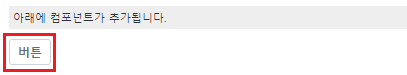
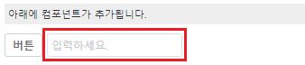
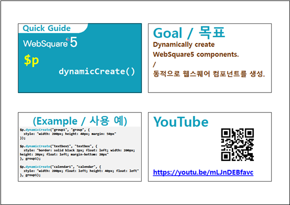

동적으로 UI 컴포넌트를 생성 및 추가하는 API 예제입니다.
'$p.dynamicCreate'로 구현할 수 있습니다.
Trigger 생성 후 추가하기
InputBox 생성 후 추가하기
1. 버튼 실행1을 클릭합니다.
2. 화면에 Trigger 컴포넌트가 추가됩니다.
[실행 예시 이미지]

1. 버튼 실행2를 클릭합니다.
2. 화면에 Input 컴포넌트가 추가됩니다.
[실행 예시 이미지]

동적으로 생성할 컴포넌트가 추가될 부모 컴포넌트가 있어야 합니다. $p.dynamicCreate API는 부모 컴포넌트 객체를 받기 때문에 body에 추가할 수 없습니다.
예제에서는 grp_target id를 가진 Group 컴포넌트를 부모 컴포넌트로 지정하였습니다.동적으로 생성할 컴포넌트의 ID는 중복이 되어서는 안됩니다.
추가할 컴포넌트명(pluginName)은 컴포넌트의 Plugin Name 에 자세히 나와있습니다.
var _comp; var strID; var objDate; //중복되지 않는 ID 생성을 위한 스크립트 objDate = new Date(); strID = "btn_ex_" + objDate.getDate() + "_"+ objDate.getTime(); //버튼(trigger) 생성 _comp = $p.dynamicCreate( strID, "trigger", //생성할 컴포넌트의 pluginName { style : "" ,className : "btn_cm mr_def" }, grp_target //생성(추가)할 위치의 컴포넌트 객체 ); //생성된 trigger의 value 할당. _comp.setValue("버튼");
var _comp; var strID; var objDate; //중복되지 않는 ID 생성을 위한 스크립트 objDate = new Date(); strID = "ipt_ex_" + objDate.getDate() + "_"+ objDate.getTime(); //input 생성 _comp = $p.dynamicCreate( strID, "input", //생성할 컴포넌트의 pluginName { style : "min-width:80px; min-height:20px;", className : "mr_def", placeholder : "입력하세요.", }, grp_target //생성(추가)할 위치의 컴포넌트 객체 (ID 문자열이 아님을 주의합니다) );
[웹스퀘어5 SP5 개발 가이드] 컴포넌트 동적 생성
링크 : https://docs1.inswave.com/sp5_user_guide/4c4960bc7e1f2bf6#0c6bf8fbba28fec5
GridView 컴포넌트 동적 생성
링크 : https://youtu.be/mLJnDEBfavc
